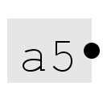

Константа
Константа
| Библиотека: | Монтаж |
| Введён в: | 2.0 Beta 1 (в библиотеке Элементы, перемещён в библиотеку Монтаж в 2.7.0) |
| Внешний вид: |
 |
Поведение
Выдаёт на проводник значение, заданное атрибутом Значение.
Контакты
Единственный контакт — выход, разрядность которого определяется атрибутом Биты данных. Расположение контакта задаётся атрибутом Направление. На выходе всегда присутствует значение, заданное атрибутом Значение.
Атрибуты
Когда компонент выбран или добавляется, шестнадцатеричные цифры от 0 до 9 и от a до f меняют атрибут Значение. Комбинации от Alt-0 до Alt-9 меняют атрибут Биты данных, клавиши со стрелками — атрибут Направление.
- Направление
- Сторона компонента, на которой расположен контакт относительно отображаемого значения.
- Биты данных
- Разрядность значения, выдаваемого на проводник.
- Значение
- Значение в шестнадцатеричном формате, постоянно выдаваемое компонентом. Число битов, используемых для задания значения, не может превышать разрядность компонента.
Поведение Инструмента «Нажатие»
Не предусмотрено.
Назад к Справке по библиотеке